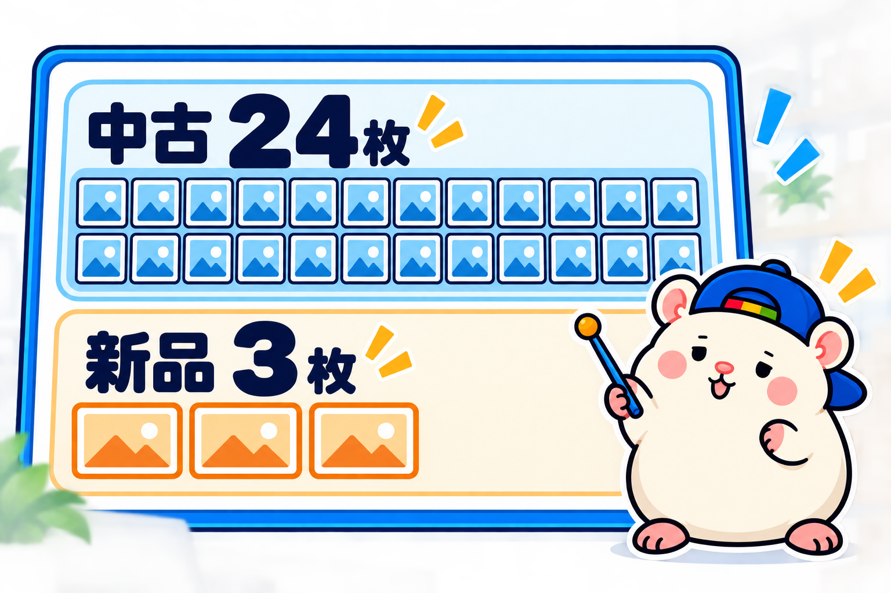
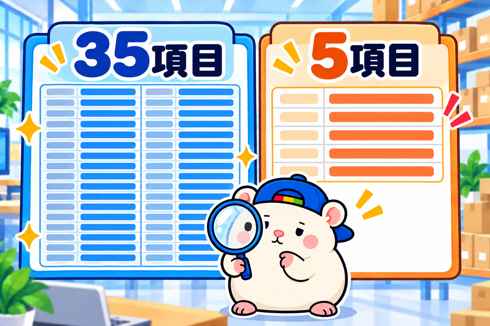
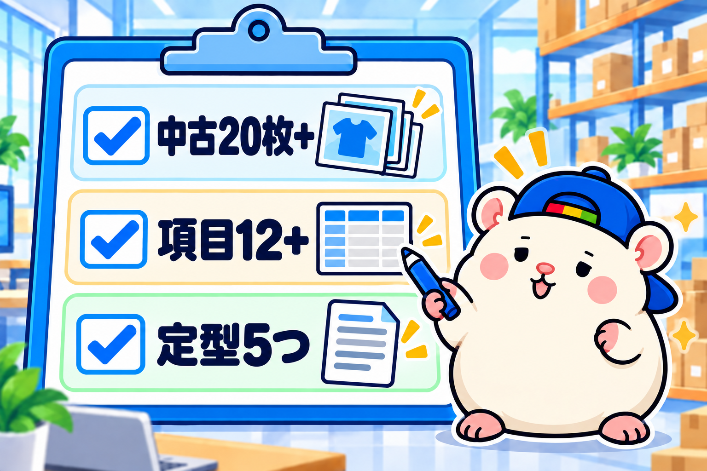

eBayジャパンの受賞セラー18店の商品ページを、1店10品ずつ、191品ぶん調べました🐹
見たのは、この4つです。
・写真の枚数
・タイトルの文字数
・Item specifics(商品の項目)の数
・説明文の長さと中身
ぜんぶ見て分かった、上の店の共通点は3つです。
① 写真の枚数は、中古か新品かで決める
② 説明文より、Item specificsを埋める
③ 説明文は定型でいい。書くのは5つ
第1弾で返品と配送除外国、第2弾で発送、第3弾で出品数と値段を調べました。
今回は、1品1品の商品ページの中身です。
調べ方: 1店10品を、APIで開く
eBayの商品取得API(プログラム用の窓口)で、各店の出品から10品ずつ取りました。
返ってくるのは、写真の枚数、タイトル、Item specifics、説明文のHTMLそのものです。
説明文は、10品を2つずつ比べて「どれくらい同じ文か」も出しました。
1.0なら全品まったく同じ文、0なら全部ちがう文です。
受賞20店のうち2店は検索に出てこなかったので、18店を対象にしています。
うちの店も同じ方法で10品取って、最後に比べます。
学び①: 写真の枚数は、中古か新品かで決める

eBayは、1出品に写真を24枚まで入れられます。
18店の真ん中は10枚でした。
24枚ぜんぶ使っている店が、3店ありました。
高級腕時計・カメラ・ブランドバッグ。
どれも、中古の高額品を売っている店です。
いちばん少ない店は、1〜2枚。
オーディオ・トレカ・カメラのもう1店で、新品や定番品が中心の店です。
分かれ目は、値段ではなく中古か新品かでした。
中古は、傷・汚れ・付属品を全部見せないと、お客さんが安心できない。
新品は、メーカーの写真1枚で、何が届くか分かる。
eBayの公式ページにも「1枚目の写真が検索結果に出る」とあります。
枚数より先に、1枚目です。
あなたの店なら: 中古を売るなら20枚以上。傷は隠さず全部撮る。
新品なら5枚前後でいい。そのかわり1枚目に全部のせる。
学び②: 説明文より、Item specificsを埋める

Item specificsは、ブランド・型番・色・サイズなど、商品ページの上のほうに表で出る項目です。
18店の真ん中は12項目。
いちばん多い店は、高級腕時計の35項目でした。
おもしろかったのは、トレカの店です。
説明文が、ゼロ。
1文字も書いていません。
そのかわり、Item specificsが23項目ありました。
eBayの公式ページには、こう書いてあります。
「項目を埋めるほど、買い手の探しているものに商品を合わせやすくなる」
「eBayの検索だけでなく、Google Shoppingや外の検索でも見つかりやすくなる」
説明文は、お客さんが開いてから読むもの。
Item specificsは、お客さんが開く前に、検索で引っかかるもの。
上の店は、開く前のほうに力を入れていました。
あなたの店なら: 説明文を書き足す前に、Item specificsを12項目以上埋める。
カテゴリごとにeBayが「おすすめ」と出す項目は、全部埋める。
学び③: 説明文は定型でいい。書くのは5つ
説明文の長さは、0語から1,033語まで。
長さと賞は、関係ありませんでした。
それより、中身です。
18店中17店が、定型文でした。
10品を比べると、同じ文の割合が0.6〜1.0。
品ごとに変えているのは、状態の1〜2行だけです。
自由文の店は、1店だけ。
中古ブランドバッグの店で、品ごとに全部ちがう文を書いていました。
1点ものだから、できることだと思います。
定型文に何を書いているか、店ごとに見ていきます。
・配送(どこから、何日で、何で送るか): 17店
・状態(中古の程度・付属品): 15店
・関税・税金はお客さん負担: 15店
・支払い(いつまでに、何で): 13店
・「Japan」(日本から送る、日本製): 15店
この5つが、上の店の定型文です。
返品を本文に書いている店は11店だけ。
7店は、返品ポリシーの設定だけで済ませていました。
ちなみに、動画を入れている店は0店。
サブタイトルは191品中1品。
凝った道具は、誰も使っていません。
あなたの店なら: 説明文のテンプレを1つ作って、5項目を書く。
品ごとに書くのは、状態の1〜2行だけ。それで上の店と同じです。
うちの店に当てはめてみた
うちの店の10品も、同じ方法で調べました。
・写真: 8枚(中古なので、学び①では少なめ)
・Item specifics: 5項目(18店の中でいちばん少ない)
・説明文: 153語・定型(学び③のとおり)
学び③は、合っていました。
説明文は定型で、配送・状態・関税・支払い・Japanの5つも入っている。
学び①と②が、合っていませんでした。
中古を8枚は少ない。
Item specificsが5項目は、上の店の半分以下。
出品担当は、多い日に281件出してくれます。
数を出すことに寄せていたぶん、1品ずつの項目が薄くなっていました。
出品担当と相談して、まずItem specificsを12項目以上に埋めることから始めます。
まとめ: 上の店の商品ページは、この3つ

□ 写真は、中古なら20枚以上・新品なら5枚前後。1枚目に全部のせる
□ 説明文より先に、Item specificsを12項目以上埋める
□ 説明文は定型でいい。配送・状態・関税・支払い・Japanの5つ+品ごとの状態1行
※18店×10品の見本で調べています。全品ではありません。
説明文を長く書けば売れる、と思っていました。
上の店は、説明文より写真と項目でした。
台帳に書いておこう🐹
▼第1弾: eBay有力セラーのビジネスポリシーを調べてみた結果(返品・配送除外国)
https://rental-space.net/articles/2026-09-11-ebay-award-seller-return-shipping.html
▼第2弾: eBay有力セラーの発送を調べてみた結果(配送方法・日数)
https://rental-space.net/articles/2026-09-14-ebay-award-seller-shipping.html
▼第3弾: eBay有力セラーの出品数と価格を調べてみた結果
https://rental-space.net/articles/2026-09-16-ebay-award-seller-listing-count-price.html
▼中の人🏠(レンタルスペース23部屋・売上1.5億)のレンスペ実録
https://note.com/rentalspace_kiku
▼ブログ(eBay×レンスペ、全記事まとめ)
https://rental-space.net
▼この店のやり方は、ぜんぶ1冊にまとめてあります
リサーチ・出品・値付け・顧客対応まで、初月利益10万4,286円を出した実店舗の記録と手順を全部書いた教科書です。
読んだその日から、AI社員の作り方をそのまま真似できます。
『AI × eBay輸出の教科書 — 梱包以外、ぜんぶAI』
https://rental-space.net/kyokasho/ebay/
販売価格は3部売れるごとに2,000円ずつ値上がりします（上限あり）。内容・最新価格は販売ページをご確認ください。